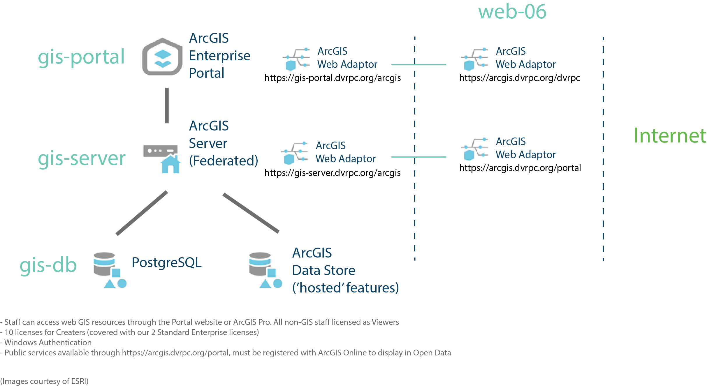

Implementation
DVRPC has implemented five of these components on four internal virtual machines named:
gis-db: PostgreSQL, ArcGIS Data Storegis-server: ArcGIS Server (hosting server for Portal, federated), ArcGIS Web Adaptorgis-portal: ArcGIS Portal, ArcGIS Web Adaptor, ArcGIS License Serverweb-06: 2 ArcGIS Web Adaptors- gis-portal Web Adaptor named 'dvrpc'
- gis-server Web Adaptor named 'portal'
- arcgis sub-domain of dvrpc.org
DVRPC will also rely on ESRI’s SAAS cloud product called ArcGIS Online to create web maps, web applications, and promote data sharing with the public.
DVRPC has registered a large number of public GIS services with ArcGIS Online’s Open Data platform and will continue to use it for open data distribution.
gis-server, gis-portal, gis-db all reside behind the DMZ and are open to the internet with 2 web adaptors installed on web-06
ArcGIS Server is federated with ArcGIS Portal and Windows Authentication is active.

Hardware specification for each virtualized computer
gis-db(2) Intel Xeon Silver 4114 CPU @ 2.20GHz, 2195 Mhz, 4 Core 24GB RAM 600GB SSDgis-server(2) Intel Xeon Silver 4114 CPU @ 2.20GHz, 2195 Mhz, 4 Core 24GB RAM 300GB SSDgis-portal(1) Intel Xeon Silver 4114 CPU @ 2.20GHz, 2195 Mhz, 4 Core 8GB RAM 100GB SSD
Software versions and details of configuration
-
Windows Server 2019 Standard on all servers
-
gis-dbPostgreSQL 15.6, POSTGIS 3.4.1 Using PostGIS Geometry type User Schema (biota, freight, demographics, transportation, etc.) -
gis-serverArcGIS Server 10.9 Federated server https://gis-server.dvrpc.org/arcgis (internal address) https://arcgis.dvrpc.org/portal (external address) Registered data stores (PostgreSQL data owner connection files, ArcGIS data store) IIS -
gis-portalArcGIS Portal 10.9 https://gis-portal.dvrpc.org/arcgis/home/ (internal address) https://arcgis.dvrpc.org/dvrpc/home (external address) Windows Authentication IIS -
gis-dbArcGIS Data Store 10.9 web-06ArcGIS Web Adaptor 10.9